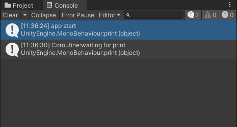

- [] 游戏一开始启动协程，5秒后执行对应代码
-
using System.Collections;
using System.Collections.Generic;
using UnityEngine;
public class Demo : MonoBehaviour
{
void Start()
{
print("app start");
StartCoroutine(WaitToPrint());
}
IEnumerator WaitToPrint()
{
yield return new WaitForSeconds(5);
print("Coroutine:waiting for print");
}
}
- 
- [] 多波敌人依次出现
- 代码1：数据文件
-
[System.Serializable]
public class Wave
{
public GameObject enemyprefab;
public int count;
public float inter;
}
- 代码2：主业务逻辑
-
public class MonSpawn : MonoBehaviour
{
public Wave[] waves;
public Transform posFre;
public int waveInter;
void Start()
{
StartCoroutine(MonGer());
}
IEnumerator MonGer()
{
foreach (Wave waveItem in waves)
{
for (int i = 0; i < waveItem.count; i++)
{
Instantiate(waveItem.enemyprefab, posFre.position, Quaternion.identity);
yield return new WaitForSeconds(waveItem.inter);
}
yield return new WaitForSeconds(waveInter);
}
}
}